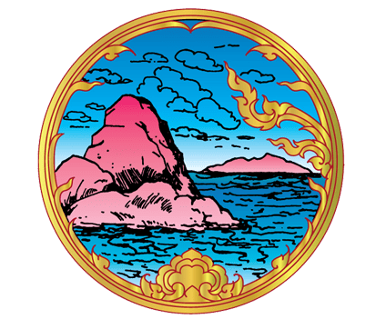
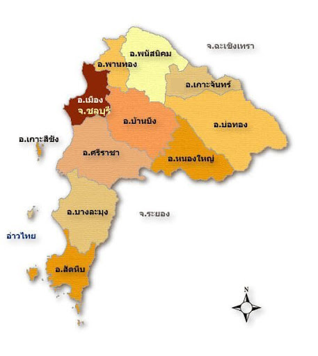

|
|

|

|

|

|
โลโก้ จังหวัด ชลบุรี
 |
|
แผนที่ จังหวัด ชลบุรี
 |
ประวัติความเป็นมา จังหวัดชลบุรี
1. ยุคก่อนประวัติศาสตร์และยุคโบราณ
• ยุคก่อนประวัติศาสตร์: พบร่องรอยการตั้งถิ่นฐานของมนุษย์ยุคหินใหม่ เช่น แหล่งโบราณคดีโคกพนมดี (อำเภอพนัสนิคม)
• ยุคประวัติศาสตร์ตอนต้น: มีชุมชนและเมืองโบราณสำคัญ 3 เมือง ได้แก่ เมืองพระรถ (อำเภอพนัสนิคม), เมืองศรีพโล (อำเภอเมืองชลบุรี) และเมืองพญาเร่ ซึ่งมีความเจริญสืบเนื่องมาตั้งแต่สมัยทวารวดี ขอม (ลพบุรี) และสุโขทัย
2. สมัยกรุงศรีอยุธยา
• ปรากฏหลักฐานในทำเนียบศักดินาหัวเมืองเมื่อ พ.ศ. 1919 มีฐานะเป็นเมืองจัตวา ใช้ชื่อว่า "ออกเมืองชลบุรีศรีมหาสมุทร" มีหน้าที่ส่งส่วยไม้แดง
• ในช่วงเสียกรุงศรีอยุธยาครั้งที่ 2 (พ.ศ. 2310) สมเด็จพระเจ้าตากสินมหาราชได้ยกทัพผ่านพื้นที่ชลบุรี เพื่อรวบรวมไพร่พลและเดินทางต่อไปตีเมืองจันทบุรีเพื่อกู้ชาติ
3. สมัยรัตนโกสินทร์
• ช่วงแรก: ยังไม่มีการจัดตั้งเป็นจังหวัดชลบุรีอย่างเป็นทางการ แต่แบ่งเป็นเมืองใหญ่ 3 เมือง คือ เมืองบางปลาสร้อย (ตัวเมืองปัจจุบัน), เมืองพนัสนิคม และ เมืองบางละมุง โดยขึ้นตรงต่อส่วนกลางหรือมณฑลปราจีนบุรี
• การเปลี่ยนแปลงเป็นจังหวัด: ในปี พ.ศ. 2476 รัฐบาลได้ยกเลิกการปกครองแบบหัวเมืองและมณฑลทั่วประเทศ แล้วเปลี่ยนมาเป็นระบบ "จังหวัด" จึงก่อตั้ง "จังหวัดชลบุรี" ขึ้นอย่างเป็นทางการจวบจนปัจจุบัน
คุณสามารถอ่านรายละเอียดเพิ่มเติมได้ที่หน้า ประวัติความเป็นมาของจังหวัดชลบุรี หรือข้อมูลจาก สำนักงานการท่องเที่ยวและกีฬาจังหวัดชลบุรี |